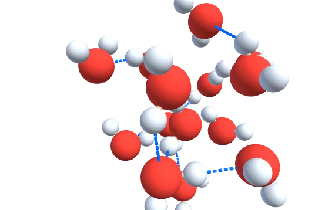
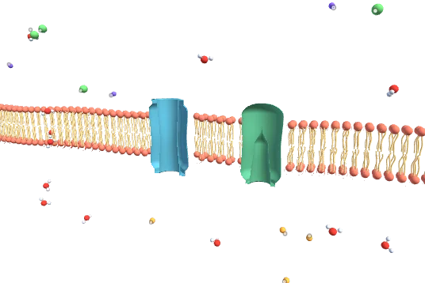
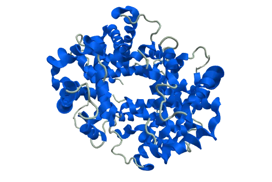
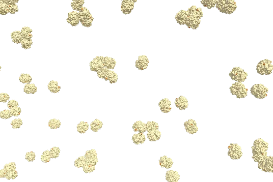
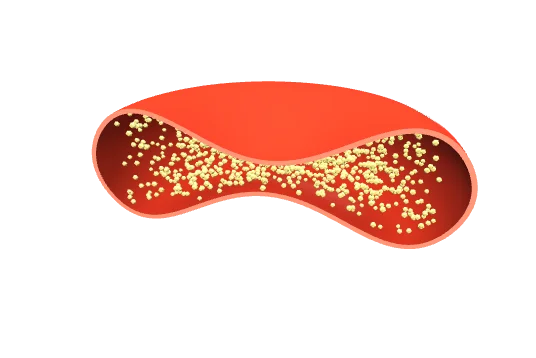
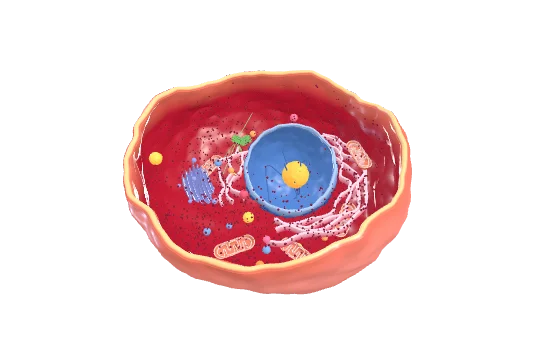
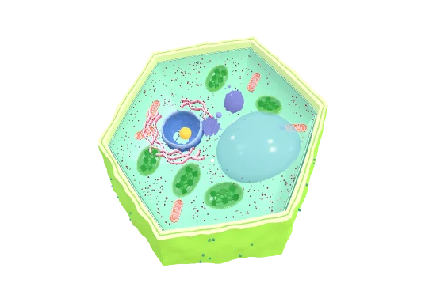
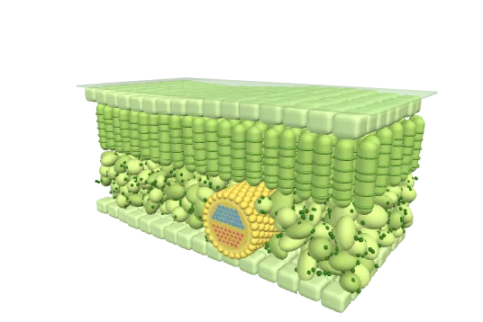
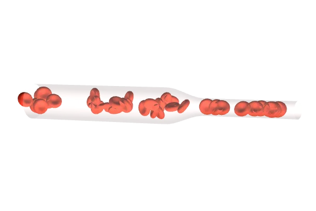
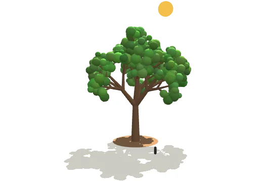

WaterSim
Liquid water, and what follows from hydrogen bonds.
- temperature
- phase change
- ice floating
- salt dissolving
molecules · bulk
A growing library of interactive biology, built in HTML and javascript. Reviewed and edited by humans.
exist already, each one a line of code to use. The next one is AddingAComponent.md.

Liquid water, and what follows from hydrogen bonds.

A bilayer, its proteins, and what crosses.

Any protein in the library, in its own ångströms.

A crowd of haemoglobins, and the moment HbS starts a fibre.

One red blood cell, cut open.

An animal cell cut open, with its organelles.

A plant cell cut open, and what water does to it.

A leaf in cross-section, tissue by tissue.

A vessel of red cells, narrowing.

A tree, the air around it, and where its mass came from.
A chart of measurements, or of a running sim.
AI agents have made coding 3D graphics accessible. We value human review and insight on science, comprehension, and design.
Is something is wrong or badly explained? Would something confuse a student?. Do you have ideas on how to improve a lesson or visualization? Let us know!
Our repo has a pipeline and checkers that do most of the technical work. But AI can't tell if the visual makes sense even when the data is correct. Make judgements on what is useful and legible for learning.
Add to our library: an organelle, a tissue, a process... Every lesson and every generated app can then use it. Choose the level of realism, thoughtful parameters, and check the accuracy.
A step-through that carries an idea from first look to "I get it!". Feel free to build however you like, send me a message feature it on the site!
Starter prompt. It clones the repo, reads the docs and builds. Replace the one line that says what you want. Opus, Fable, and Asta are especially good at 3D work.
Clone https://github.com/rhymeandreason/ScienceSandbox and read
demos/CLAUDE.md, then the one doc its "What to read" table names for this
task.
TASK: <one sentence: what to add, and what it should teach>
Start the dev server with node demos/tools/dev-server.js, run the checkers,
then give me the link and tell me exactly what to click to see whether it is right.
Getting started by hand. You can also open any html page on its own.
git clone https://github.com/YOUR-USERNAME/ScienceSandbox.git cd ScienceSandbox
Node only. No install, no build. Open http://localhost:8817/. Saving a file reloads just the pages that use it, and a CSS change swaps in place, so a scene keeps its camera while you tune it.
node demos/tools/dev-server.js
Only needed for molecules. Points git at .githooks so the offline checkers run before each commit, and installs RDKit for the handedness check. The pages still need nothing.
cd demos && npm i node check-molecules.js # geometry, bond angles, stereo claims node tools/check-pages.js # every page still loads what it needs
The code
AGPL-3.0. Anything built on this stays open, including a hosted copy. A classroom should be able to take a lesson apart, and the next classroom should get that back.
The kodolab content
CC BY-NC 4.0. Lesson copy, rendered stills, 3D models. Teach with them and remix them for your class, presentations, or papers, with credit (include a link). Selling them is a conversation, so ask.
Data Credit
Structures come from the Protein Data Bank, credited to the labs that deposited them.
Questions
Say hello to Mary Huang. If you teach this material, I would love to hear from you! What are the things your students get stuck on?
What confused you in first-year biology is still confusing someone this term. Build that one.
Fork the repo →Not ready to build? Tell us what is missing instead.